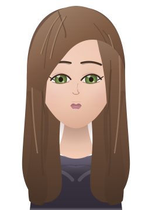
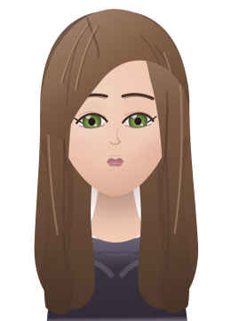
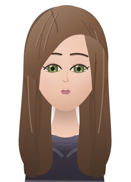

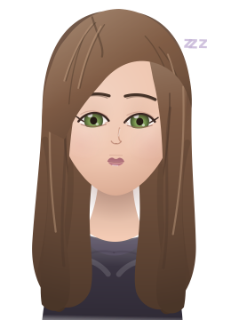

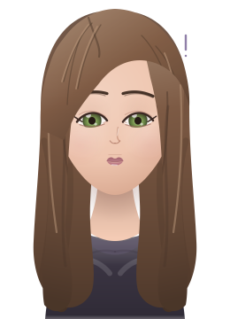

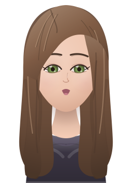
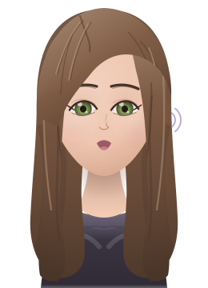

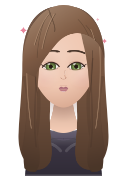
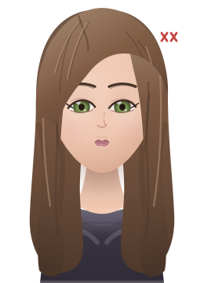

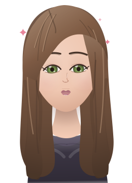
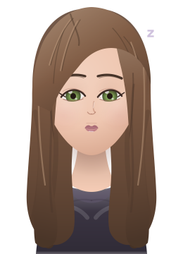


Kumral saç, yeşilimsi ela gözler, yumuşak gölgeli cilt. Bu görseller uygulamanın kendi QPainter çiziminden, 3× süper örnekleme ile üretildi; çalışma zamanında harici sprite veya model dosyası kullanılmaz. 8-bit chibi galerisi →












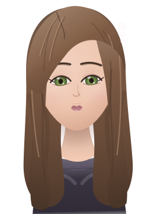


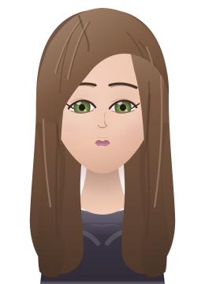

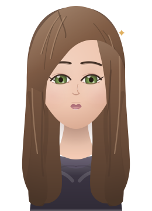
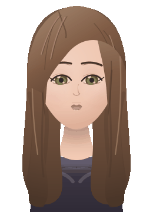
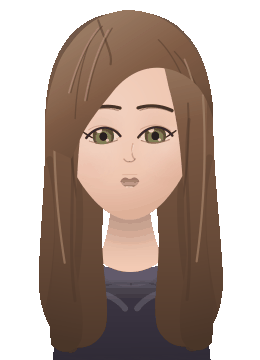
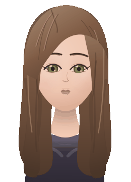

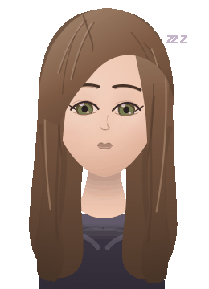


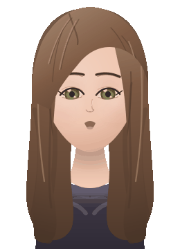
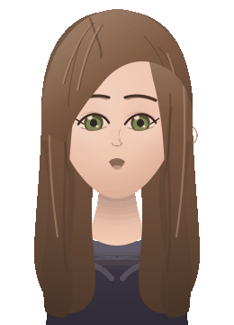
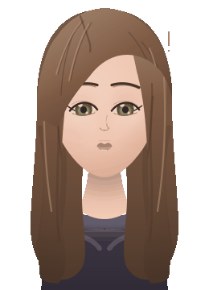
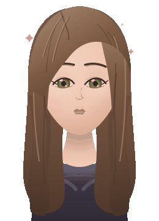
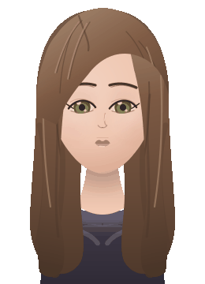
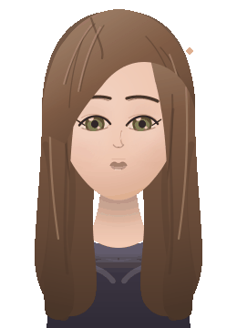
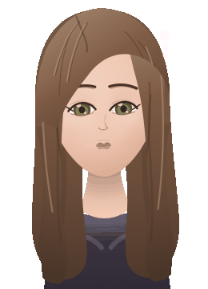
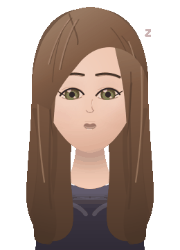
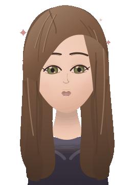